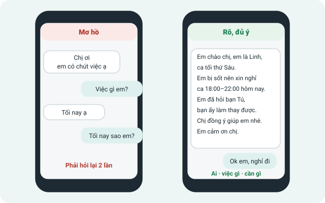

K2 · Trình bày và viết rõ ràng › Bậc 1 Làm quen
Giao tiếp tuần đầu ở chỗ làm bằng cách chào, hỏi và nhắn tin đủ ý
Bài này làm Tờ 5: Sổ tay tuần đầu. Mẫu in.
1. Mục tiêu
- Gom câu hỏi vào sổ và hỏi người hướng dẫn vào lúc họ rảnh.
- Viết tin nhắn công việc đủ 4 ý: chào và tên, việc gì, cần gì, cảm ơn.
2. Khởi động truy xuất
- Phần giới thiệu 60 giây gồm 3 ý nào?
- Nên làm gì trong 24 giờ sau phỏng vấn?
Đáp án
- Hiện tại; đã làm; vì sao chọn nơi này.
- Nhắn cảm ơn ngắn. Ghi câu hỏi đã gặp, một điều làm tốt, một điều cần sửa.
Xem lại: Phỏng vấn đầu tiên.
3. Giải thích
Tuần đầu ở chỗ làm, bạn sẽ có rất nhiều câu hỏi. Hỏi là đúng. Vấn đề là hỏi lúc nào, hỏi ai, hỏi thế nào.
Chào và hỏi cách xưng hô. Ngày đầu, chào từng người và nói tên mình. Chưa biết gọi thế nào thì hỏi: "Em nên gọi anh là anh Hùng được không ạ?"
Sổ câu hỏi. Mang một cuốn sổ nhỏ hoặc ghi chú trên điện thoại.
- Câu gấp, ảnh hưởng khách hoặc an toàn: hỏi ngay.
- Câu không gấp: ghi vào sổ. Hỏi gộp khi người hướng dẫn rảnh, ví dụ lúc vắng khách hoặc cuối ca.
- Trước khi hỏi, thử tự tìm trong tài liệu hoặc quan sát đồng nghiệp làm.
Người được hỏi nhiều lần một câu sẽ mệt. Ghi câu trả lời lại để không hỏi lại.
Tin nhắn công việc 4 ý. Chỗ làm thêm thường dùng nhóm chat. Một tin rõ giúp người nhận trả lời ngay.
Tin nhắn công việc 4 ý
- Chào và tênMình là ai, ca nào.
- Việc gìChuyện gì, khi nào.
- Cần gìĐề nghị hoặc phương án của mình.
- Cảm ơnMột câu ngắn.

Báo nghỉ hay trễ ca. Báo càng sớm càng tốt, theo cách chỗ làm quy định. Nếu được, đề xuất người làm thay. Gọi điện khi việc gấp sát giờ ca.
Nhóm chat chung. Không nhắn việc riêng vào nhóm chung. Không chụp ảnh khách, giấy tờ nội bộ để đăng lên mạng.
4. Ví dụ tại nơi làm việc Việt Nam
Tình huống giả định. Khang thực tập ở bộ phận kho của một xưởng may tại Bình Dương. Ngày đầu, chị Thảo hướng dẫn Khang cách ghi phiếu nhập kho.
Trong buổi sáng, Khang có 5 câu hỏi. Khang hỏi ngay 1 câu, vì xe hàng đang chờ: "Kiện này ghi mã nào ạ?" Bốn câu còn lại, Khang ghi vào sổ.
Lúc 16:30, kho vắng. Khang hỏi: "Chị Thảo ơi, em có 4 câu hỏi về phiếu nhập kho. Chị có 5 phút không ạ?" Khang ghi câu trả lời ngay cạnh câu hỏi.
Hôm sau, Khang bị kẹt xe. Khang nhắn chị Thảo lúc 7:20: "Em chào chị, em Khang thực tập kho. Đường Mỹ Phước – Tân Vạn đang kẹt, em đến trễ khoảng 15 phút. Em sẽ làm bù 15 phút cuối ca nếu chị đồng ý. Em xin lỗi chị ạ."
Vì sao cách này tốt: Khang tách câu gấp và câu chờ được. Tin nhắn trễ ca có đủ 4 ý và báo trước giờ vào ca.
5. Thực hành
Tình huống giả định. Bạn làm thêm ở một tiệm trà sữa. Sáng thứ Bảy bạn có lịch thi bù ở trường, trùng ca 8:00–12:00. Bạn vừa biết lịch thi tối thứ Tư. Bạn Vy cùng tiệm đồng ý làm thay, nếu quản lý cho phép.
Viết tin nhắn gửi quản lý (anh Phong).
Gợi ý 1
Kiểm tra đủ 4 ý: chào và tên, việc gì (ca nào, lý do), cần gì (đề xuất Vy làm thay), cảm ơn.
Gợi ý 2
Nên nhắn ngay tối thứ Tư, không đợi đến sát thứ Bảy.
Lời giải mẫu
"Em chào anh Phong, em là [tên], ca sáng thứ Bảy. Em vừa nhận lịch thi bù ở trường sáng thứ Bảy này, trùng ca 8:00–12:00. Em đã hỏi bạn Vy, Vy làm thay được. Anh đồng ý cho em đổi ca với Vy nhé. Em cảm ơn anh ạ."
(Tên là giả định để minh họa.)
6. Tự kiểm tra
Chọn đáp án. Mỗi lựa chọn đều có giải thích.
Câu 1. Ngày đầu ở quán, bạn chưa biết cách tính tiền món giảm giá. Có khách đang đứng chờ thanh toán. Bạn nên làm gì?
-
Chưa đúng. Việc này ảnh hưởng khách ngay lúc đó, nên là câu hỏi gấp.
-
Đúng. Đúng. Câu ảnh hưởng khách hoặc an toàn thì hỏi ngay.
-
Chưa đúng. Tính sai tiền gây thiệt hại cho khách hoặc cho quán.
Câu 2. Tin nhắn nào đủ 4 ý?
-
Chưa đúng. Thiếu tên, ca nào, lý do và đề nghị cụ thể.
-
Đúng. Đúng. Có chào và tên, việc gì, cần gì, cảm ơn.
-
Chưa đúng. Thiếu tên, lời chào, và người quản lý không biết bạn đề nghị gì.
Câu 3. Bạn có 6 câu hỏi không gấp về cách sắp xếp kho. Người hướng dẫn đang bận nhận hàng. Bạn nên làm gì?
-
Chưa đúng. Ngắt việc người khác nhiều lần làm họ khó tập trung.
-
Đúng. Đúng. Gom câu hỏi giúp tiết kiệm thời gian cho cả hai bên.
-
Chưa đúng. Không hỏi dẫn tới làm sai. Hỏi đúng lúc là kỹ năng tốt.
Câu 4. Một khách nổi tiếng ghé quán. Bạn muốn chụp ảnh khách và hóa đơn để đăng lên mạng cá nhân. Nên làm thế nào?
-
Chưa đúng. Ảnh khách và giấy tờ của quán không phải của riêng bạn để đăng.
-
Đúng. Đúng. Hình ảnh khách và giấy tờ nội bộ cần được bảo vệ.
-
Chưa đúng. Nhóm chat chung chỉ dùng cho việc. Ảnh khách vẫn không nên chia sẻ.
7. Phản tư
- Bạn thường ngại hỏi vì sợ điều gì? Sổ câu hỏi giúp gì cho nỗi ngại đó?
- Tin nhắn công việc gần nhất của bạn thiếu ý nào trong 4 ý?
8. Áp dụng thật
Trong 7 ngày tới, dùng sổ câu hỏi ở trường, chỗ làm thêm hoặc dự án nhóm. Cuối tuần, đếm: bao nhiêu câu bạn tự tìm ra, bao nhiêu câu phải hỏi. Viết lại một tin nhắn công việc của bạn cho đủ 4 ý. Ghi cả hai vào Tờ 5.
Cách nhận chỉ dẫn và nhắc lại cho đúng: Xác nhận chỉ dẫn trước khi làm. Phép lịch sự như một thói quen có ở daynentang.com.
9. Siêu dữ liệu
| skill | K2 · Trình bày và viết rõ ràng |
|---|---|
| level | Bậc 1 · Làm quen |
| group | N2 |
| framework_map | CSfW: 2a Communicate for work; 2b Connect and work with others; SkillsFuture CCS: Communication; NACE: Communication; Professionalism (chỉ dẫn chiếu) |
| updated | 2026-11-14 |
Hoàn thành bài
Đánh dấu đã học để site gợi ý lịch ôn sau 1, 3 và 7 ngày. Dữ liệu chỉ lưu trên máy của bạn.
Lịch ôn gợi ý: